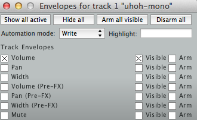
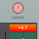
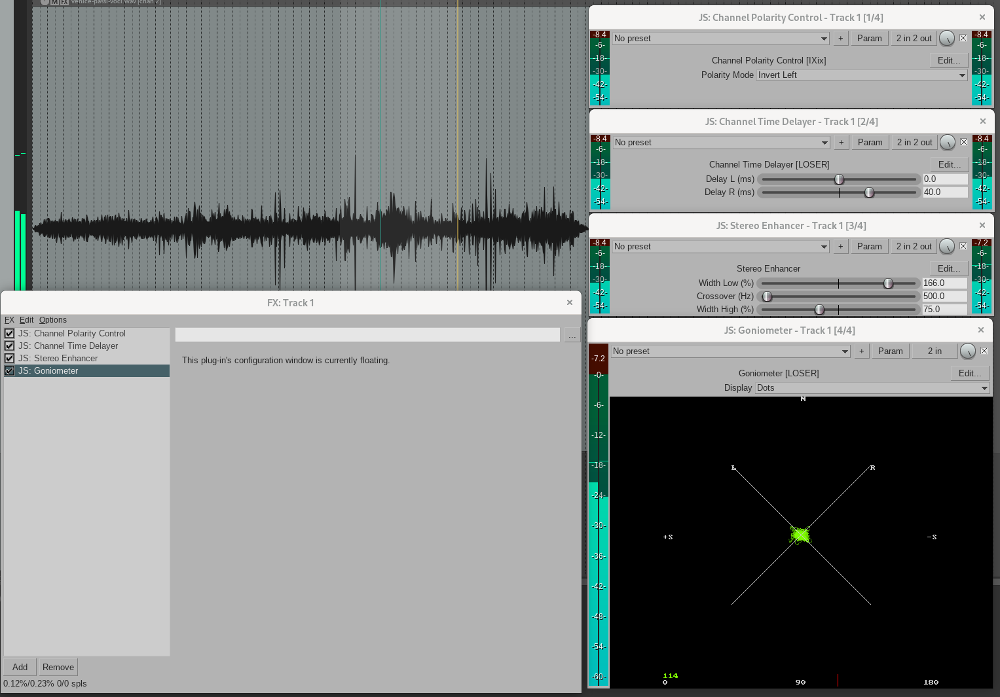

MEDIAART 2G03: Practice #8
Practice #8: engage stereo audio possibilities via panning, recording, pseudo-stereo, and stereo transformations
Goal: To use automation and panning to make a mono sound source “move” along the left-right axis; and to apply pseudo-stereo techniques to turn a mono sound source into stereo (without panning)
Purpose: As we've noticed throughout this course, sound is closely tied to space and motion. Doing creative things with how sounds appear in the stereo field between the left and right speakers (or left and right headphones) is a way to engage directly with this key aspect of the phenomenon of sound, and audio projects that use sound spatialization techniques robustly - in ways tailored to the underlying sounds and ideas - are often all the more engaging for that. Panning and pseudo-stereo are two (but quite different) techniques for starting with mono recordings (one channel) and producing stereo (left-right) signals from those.
Specifications: You will receive credit for a tutorial/practice submission in this folder that meets ALL of the following specifications (more detailed instructions are found below):
- The submission contains a ZIP archive containing ONLY a rendered WAV file (not source files, not a Reaper project folder or file)
- The WAV file demonstrates a sound source moving along the left-right axis via panning and automation.
- The WAV file also demonstrates (i.e. at a different time) a mono sound source that has been turned into a stereo image via pseudo-stereo and stereo manipulation techniques.
Detailed Instructions
Part 1: Automation and Panning
Automation allows you to change the parameters of a track or FX plugin on an ongoing basis as your project plays. Panning allows you to place sounds (especially mono sounds) at particular locations within the stereo image – at least in theory: in practice, there are some limits to the definition/realism of panning techniques.
1a. Download a few sounds of interest from freesound.org (make sure it is WAV or AIFF format), trying to get at least one sound that is very short and defined, and at least one sound that is continuous and longer. If you can find a mono sound, that would be helpful. For any non-mono sounds, make sure to follow the steps below in 2b to convert the stereo sounds to mono before using them in this milestone.
2a. Create a new Reaper project and import your found sounds into the new project.
2b. For any stereo (2 channel, left and right) signals that you imported, we need to convert them to mono files for the panning we are going to do in this milestone. Right click on each stereo audio region (after importing the sound) and select Item Properties. In the middle of the "Media Item Properties" dialog there is a setting labelled "Channel Mode:" and by default it will be set to Normal. Click on it and change the setting to "Mono (Mix L+R)". Click Apply and you should see the two signals of the stereo sound replaced with a single signal (mono) that is the equal mix of what was previously two signals. Do this for any/all stereo signals that you import with intention to pan (as in this milestone).
- First, we will work with automation. Automation allows us to “record” or program mixing and plugin actions in the DAW software and then play them back later. As a simple experiment with this, let’s interactively mix (control the gain) of our track as it plays back. Place the longer sound in the first track, and then if necessary Ctrl-Click and Drag to make multiple copies in order to have a slightly longer region of sounds to play with. Automation in Reaper is called “Envelopes/Automation” - click on the Track Envelopes/Automation button of your track to start. The button looks like this:
- We are going to record/write a “performance” with the main fader of this track. The most common modes of using automation are “Read” (to play back the automation without making any changes) and “Write” (to record what you do in the software and redo them in the future). Bring up the Track Envelopes/Automation window for your track by clicking on the button (if you haven't already). Change the automation mode to “Write” and select the Volume envelope with the tick box to the left of Volume:

-
Pull the fader for that track down to nothing (-infinite). Now press play in Reaper and as it plays gradually raise the track fader, following your ears. As you move the fader you will notice Reaper’s recording of your performance appearing in the row of the project window for the Volume envelope.
-
When you get to the end, bring up the Track Envelopes/Automation window again (as necessary) and change the Automation mode to Read. Important: If you don’t do this, you will be overwriting the performance you just recorded! Press play – you should see the fader moving “by itself” (spooky huh?…).
-
It is also possible to "freehand draw" track envelopes/automation. In the area below the track where your Volume automation is visible, press and hold Ctrl while dragging the mouse. You should be able to make new shapes for the envelopes/automation. You can delete automation points by zooming in to see the specific automation point, clicking on it to highlight it, then clicking delete. You can also add individual automation points by holding ctrl and clicking where you want to add, and can delete delete individual automation points by clicking to focus on them and pressing delete. Experiment with all of these
Note: During work on an actual project, you'll often have the choice of whether to work on the automation by performing and recording it (the first technique we tried above) or by "drawing it in" (the second technique we tried above). The reflective quiz for this tutorial asks you to think about this a bit more, but one thing we can say very quickly here is: often things are performed first, then gently corrected using the drawing method.
- Now let’s experiment with automated panning (which doesn’t mean panning with out human intervention – but rather panning that has been recorded/programmed by you and is played back by the DAW’s automation system).
Bring up the track envelopes/automation window, change the mode to Write, leave Volume selected BUT unselect the “Armed” option (now you will hear the Volume changes but not be writing new changes to Volume) – and select and arm (if necessary) Pan. Go to the beginning of the track, and record/automate some interesting spatial trajectories with the pan control (if you can’t see this in your Mixer you may need to expand that area of the application). If you’re not happy with any of your performances, leave Write automation enabled and do it again!:

- Now do it again, but this time using the shorter sound you downloaded earlier. Long sounds can sometimes exhibit an aural illusion where they appear to be wherever they first appeared in the stereo field, rather than where they move to. As you perform with the pan control, try to notice some of the inherent instability of panning – how do the extreme positions (far left and right) differ in quality from the centre, and how do all three of those positions differ in quality from what you hear in the “in between” positions?
Note: the instability of panning is less marked when listening on headphones: with headphones the listener is guaranteed to be in the sweet spot an equal distance away from both channels of audio, left and right. At the same time, using headphones removes the information we get from small head motions (because you hear the same thing no matter where you move your head) and, above all, panning algorithms in DAW software implement interaural level difference but don't add any interaural time differences.
Part 2: Pseudo-stereo and stereo manipulations
-
Make a new track in your Reaper project, and import some mono sounds into the track (see the instructions above for converting found stereo sounds into mono, if applicable.)
-
To convert our mono signal to pseudo-stereo, we'll start by making a 2-channel signal where one of the signals is the just the original signal, and the second signal is just the original signal upside down (in other words, all samples that are above the centre become the equivalent distance below the centre, and vice versa). To do this, add a "JS: Channel Polarity Control" to the effects chain for a track, and then select either "Invert Left" or "Invert Right" from the plugin's controls. (Don't select Invert Both - then both signals would just be the same again which defeats the purpose.)
-
Now that we have a signal where the left and right are opposite of each other, we'll slightly delay one of them. Add a "JS: Channel Time Delayer" to the effects chain for the track (hint: it MUST be AFTER the polarity control from the previous step. Use the controls to delay EITHER the left or right channel a little bit (e.g. 50 ms) while listening to the results on loop (on headphones of course - don't expect to hear or understand anything if you are not doing this with your studio headphones on). Things should sound complexly "spatial" and they should sound different as you experiment with different lengths of delay. (Note: Don't delay both channels - that also kind of defeats the purpose.)
-
Now that we have a pseudo-stereo signal, we can further manipulate using plugins that are meant for manipulating stereo recordings. Generally speaking many of these plugins only really work with signals that have time differences (see the discussion of interaural time differences in the online modules about stereo stuff) so they tend to not work really well with panning but they do tend to work well with pseudo-stereo (as well as "real" stereo recordings made with two microphones). Add a "JS: Stereo Enhancer" after the two plugins above and play with the "Width Low" and "Width High" controls. Width settings below 100 will make the two sides (left and right) more like each other and thus generally create more of a sensation of something being "in the middle" - but the plug in lets you do this differently to the lower and higher frequencies. The third control (Crossover) controls precisely what counts as the low vs the high frequencies. Play with the controls to try to hear the kind of subtle differences you can create.
-
Finally, since we are working with stereo signals that have both time and level differences (again, see the discussion of this in the online modules about stereo for more detail) it can be helpful to visualize this. Add a "JS: Goniometer" plugin to the effects chain. This doesn't change the signal at all but it does give you a visualization of the relationship between the left and right. Crudely speaking, it lets you see "how stereo" your signal is.
Here's an image of all four plugins in action:

When you're comfortable with all of the above techniques, render to a WAV file that demonstrates automation, panning, pseudo-stereo and stereo manipulations, ZIP that WAV file, and submit it to the relevant folder on Avenue.